It's waiting in Madeira, in October. Three ways it could go. You pick one, I book it, and we go and have it.
Madeira · October 2026
Three days that could happen.
Warm, quiet, and entirely unhurried. Flour on our hands first, then the west coast turning gold around us. A table hidden behind a door we'd normally walk straight past. Three very different ways to spend a little piece of Madeira — pick the one that feels most like you.
Option one
The slow morning
A sixty-minute massage together, then the whole spa is ours: steam, sauna, the salt room and the warm pool. No schedule after that, no decisions, nowhere else we need to be.
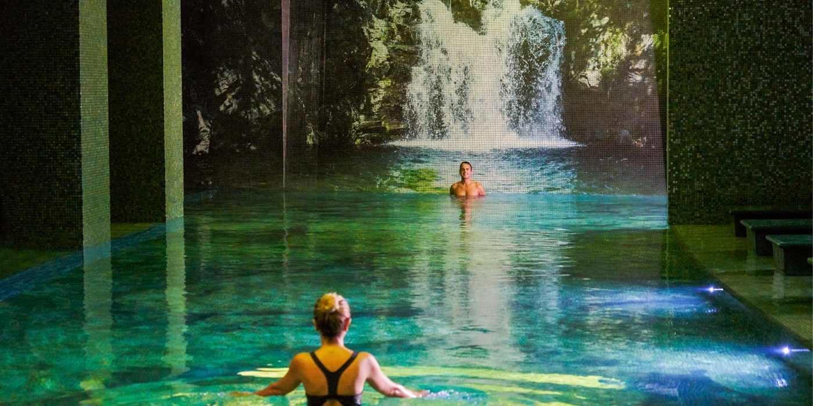
The pool landscape — lagoons, cascades, and not many other people in it
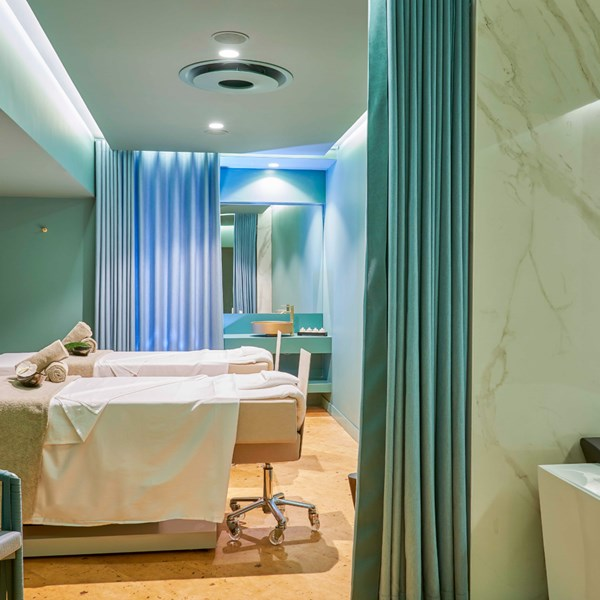
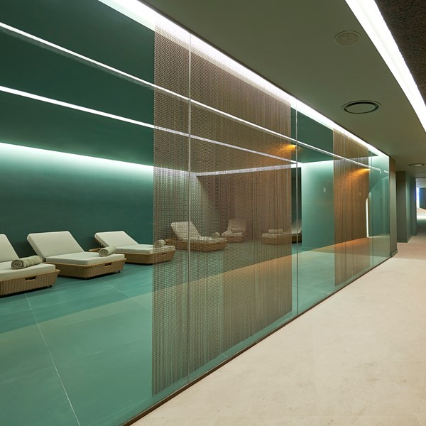
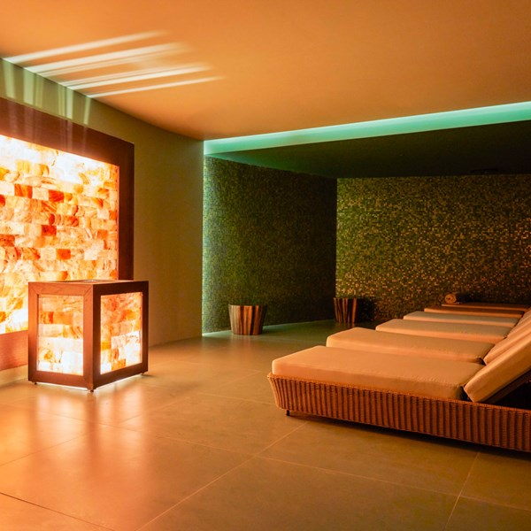
Nothing complicated
We turn up late morning, change into robes and disappear for an hour-long massage in the same room.
After that, we can move slowly through the spa circuit or do absolutely nothing by the pool. There is no correct order.
When we are ready, we walk back into Funchal and find somewhere for dinner.
Practical bits
Laurea Spa, Savoy Palace 60-minute couples massage Full spa access afterwards Open daily, 10:00–20:00
Why this oneBecause you love spas and experiences that feel out of the ordinary, and this is the most incredible spa I could find in Madeira, designed around the island's Laurissilva forest.
Option two
Sugar, then sunset
We make pastéis de nata in Funchal, drive west to Calheta, then spend the last two and a half hours of the day on the water. If dolphins appear, brilliant. If not, we still get sunset over the Atlantic.
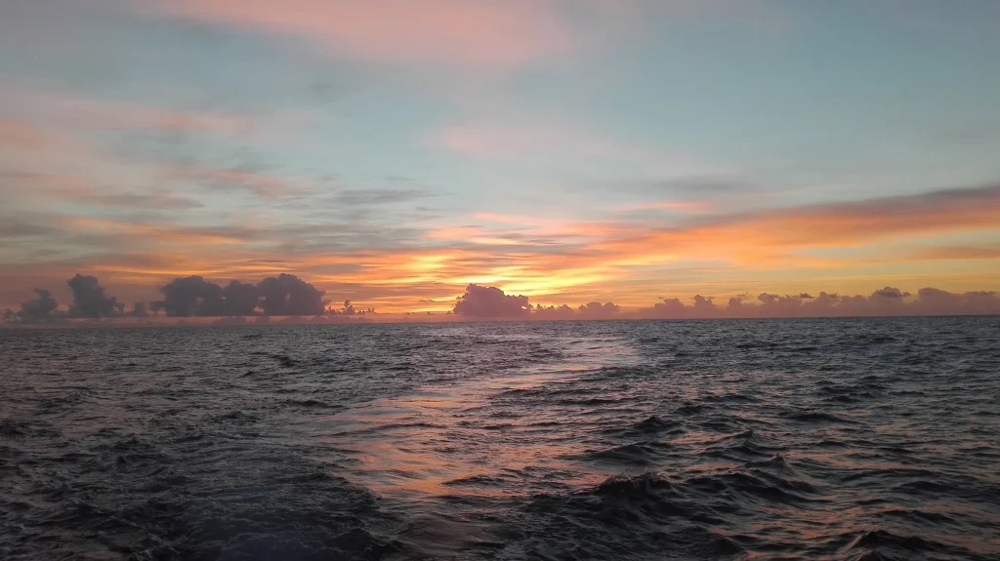
Sunset — the west coast from the water
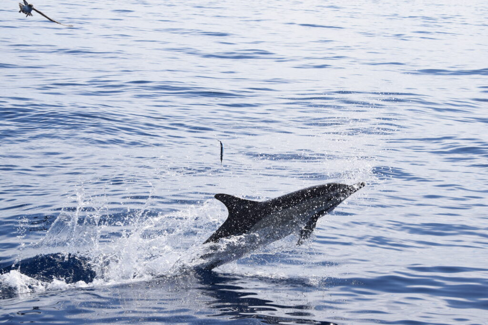
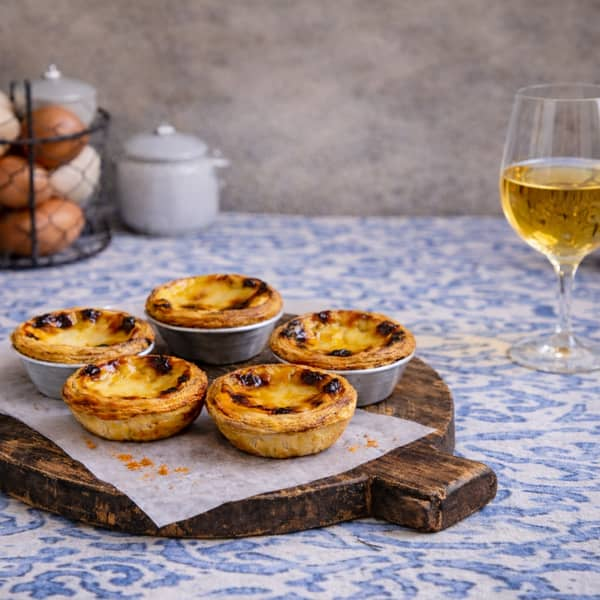
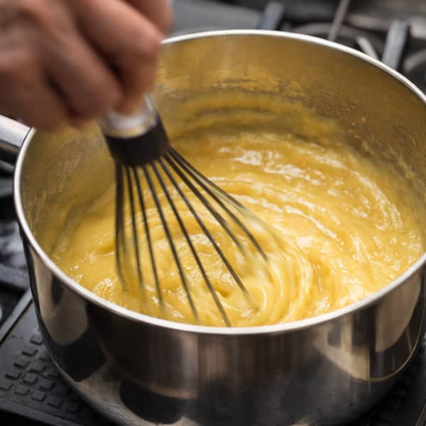
Pastéis first, then west
We start in a little kitchen in Funchal, make the custard, fill the pastry shells and eat them while they are still too hot.
Then we take the coast road west. Calheta is about an hour away, and the drive is part of the day rather than dead time between things.
The boat is small, the drinks are included, and we stay out until the light goes. Wildlife would be a bonus, not the whole reason to go.
Practical bits
Pastéis class, Funchal 1.5 hours
On Tales, Calheta 2.5 hours on the water Sunset has lower sighting odds than morning
Why this oneBecause I can already picture us on the way back when the coast has gone dark.
Option three
The secret garden
We ring the bell beside an unmarked door, have a drink in the garden, then sit beside the open kitchen for a tasting menu made from whatever is growing on the island that week.
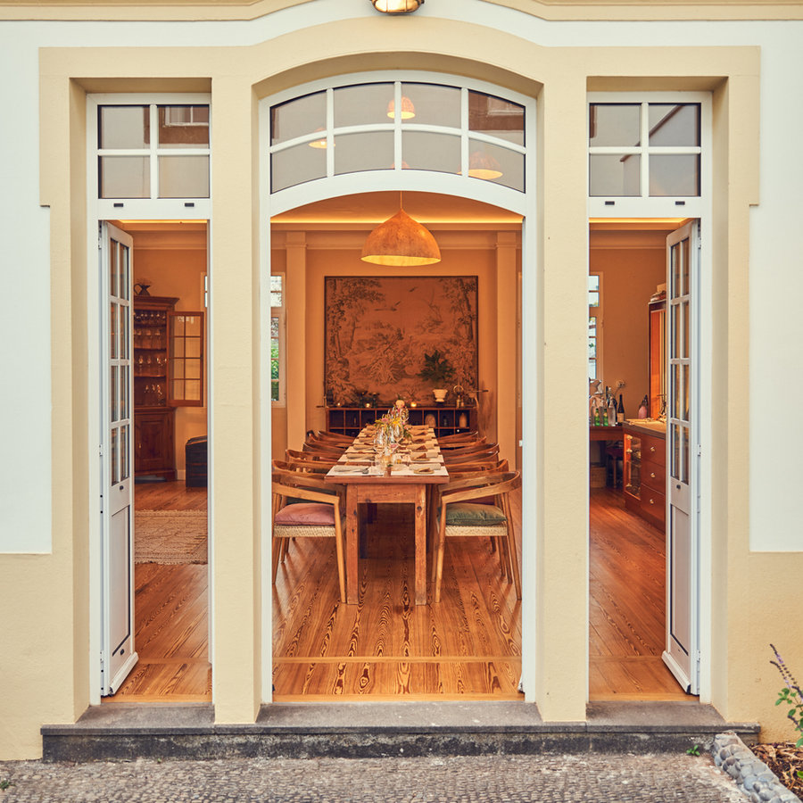
Gazebo — the family's quinta, in the middle of Funchal
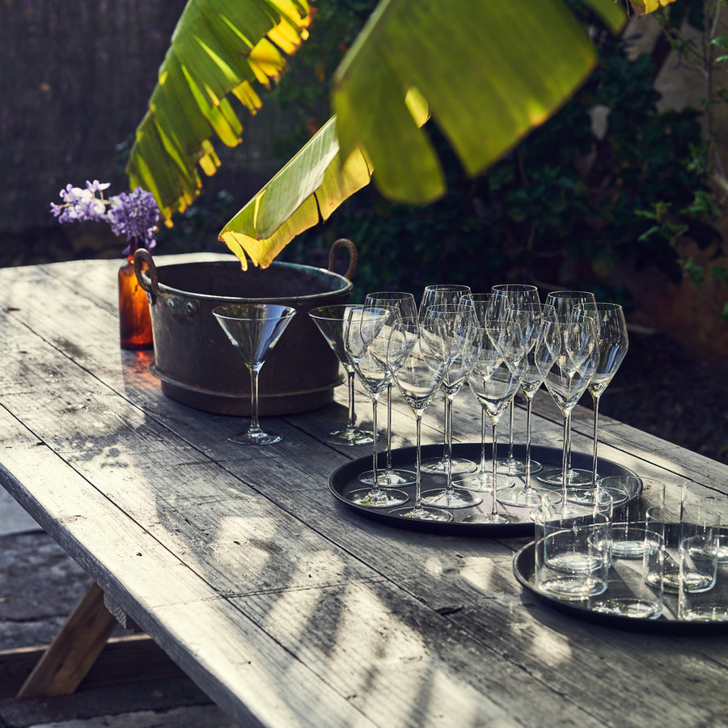
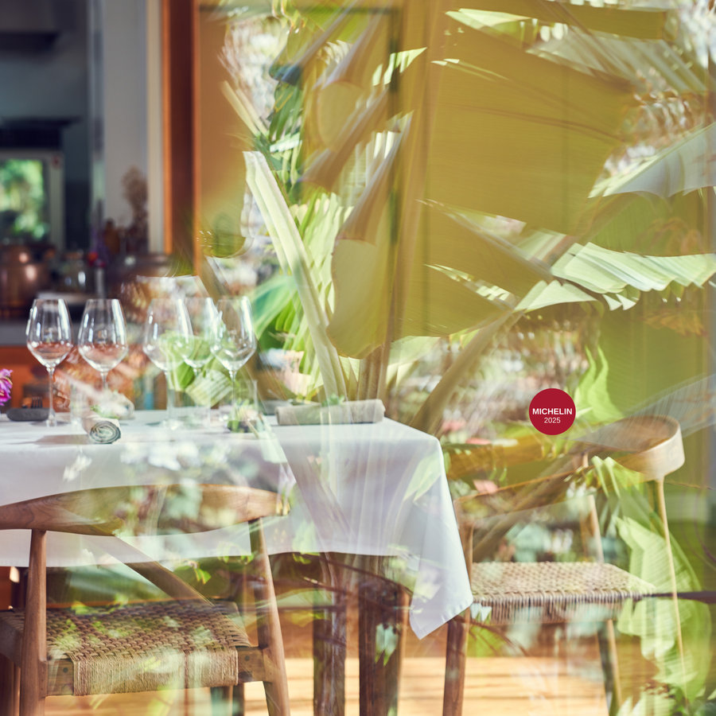
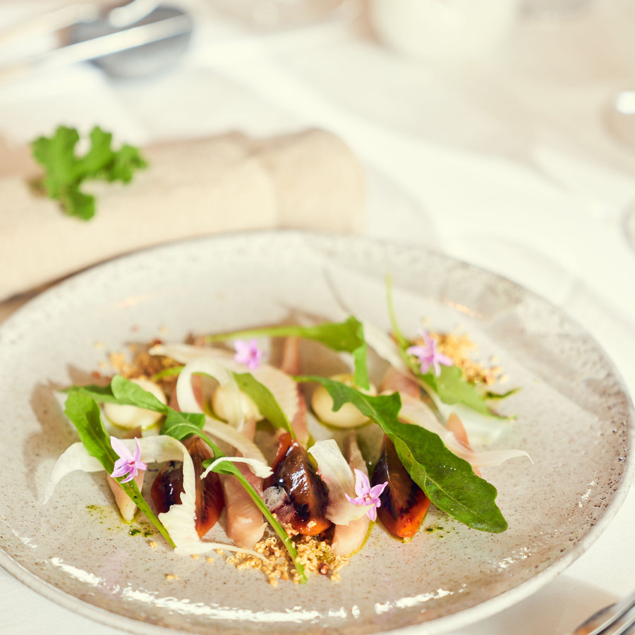
Behind the door
Everyone arrives for the same 19:30 sitting, so we start with a drink in the garden while the room fills up.
The kitchen is part of the dining room. We can watch the whole menu being made, and Filipe brings the courses out himself.
A couple of hours later, we step back through the same hidden door and somehow we are on a normal street in Funchal again.
Practical bits
Gazebo, Funchal One sitting at 19:30 Tuesday to Saturday
I'd book North to South: six courses with the wine pairing
Why this oneBecause this feels like the sort of place we'd still be talking about years later.